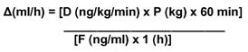

RÉSUMÉ DES CARACTÉRISTIQUES DU PRODUIT
ANSM - Mis à jour le : 07/09/2010
EPOPROSTENOL SANDOZ 1,5 mg, poudre et solvant pour solution pour perfusion
2. COMPOSITION QUALITATIVE ET QUANTITATIVE
Chaque flacon de poudre contient une quantité d'époprosténol sodique correspondant à 1,5 mg d'époprosténol.
Excipient(s): Contient 0,054 mmol de sodium (1,25 mg).
Chaque flacon de solvant contient 50 ml de solution tampon de glycine stérile.
Excipient(s): Contient 1,25 mmol de sodium (28,82 mg).
Pour la liste complète des excipients, voir rubrique 6.1.
Un ml de solution concentrée reconstituée contient 30 000 ng d'époprosténol (sous forme d'époprosténol sodique).
Poudre et solvant pour solution pour perfusion.
Poudre lyophilisée blanche à blanchâtre.
Solution limpide (pH 10,3-10,8).
4.1. Indications thérapeutiques
L'époprosténol est indiqué dans le traitement en perfusion intraveineuse continue, de l'hypertension artérielle pulmonaire (HTAP):
· hypertension artérielle pulmonaire idiopathique - familiale ou sporadique
· hypertension artérielle pulmonaire associée à une collagénose systémique
Chez les patients en stade clinique fonctionnel III ou IV dans l'échelle de sévérité de la New York Heart Association (NYHA).
Le traitement ne doit être initié et suivi que par des cliniciens expérimentés dans le traitement de l'hypertension artérielle pulmonaire. Le traitement doit être initié sous surveillance médicale étroite dans des services disposant d'une unité de soins intensifs et d'une unité d'exploration cardiologique invasive.
4.2. Posologie et mode d'administration
L'époprosténol est indiqué uniquement en perfusion continue par voie intraveineuse. Il ne doit pas être administré en bolus.
Posologie:
Adultes
Test de vasodilatation en aigu:
Ce test n'est pas destiné à établir la dose de perfusion d'époprosténol au long cours. Il n'a pour seul intérêt que de dépister les patients répondeurs aux vasodilatateurs oraux (tels que les inhibiteurs calciques). Il peut aisément être remplacé par un test au monoxyde d'azote (NO) inhalé, plus simple et dénué de retentissement systémique.
La perfusion sera débutée à raison de 2 ng/kg/min, puis augmentée par paliers de 2 ng/kg/min toutes les 15 minutes ou moins fréquemment, jusqu'à une réponse hémodynamique maximale ou l'apparition d'effets pharmacologiques limitants (par ex: nausées, vomissements, céphalées, hypotension ou tachycardie).
A titre indicatif, au cours des essais cliniques, la dose maximale administrée en aigu sans que de tels effets soient observés a été en moyenne de 8,6 ± 0,3 ng/kg/min.
Perfusion continue au long cours:
La perfusion continue au long cours d'époprosténol sera administrée à l'aide d'un cathéter veineux central. De façon temporaire, avant la mise en place d'une voie d'abord centrale, l'époprosténol pourra être administré par voie intraveineuse périphérique. Les perfusions au long cours seront débutées avec une dose inférieure de 4 ng/kg/min par rapport à la dose de débit de perfusion maximal toléré. Si le débit de perfusion maximal toléré est inférieur à 5 ng/kg/min, la perfusion au long cours sera débutée avec un débit moitié du débit maximal toléré.
Ajustements des doses perfusées lors du traitement au long cours:
Le débit de perfusion au long cours sera ajusté en fonction de la persistance, de la récurrence ou de l'aggravation des symptômes d'hypertension artérielle pulmonaire, ou bien de la survenue d'événements indésirables qui seraient dus à une dose trop importante d'époprosténol.
Dans la majorité des cas, la dose nécessaire augmente progressivement au cours du temps par rapport à la dose utilisée à l'initiation du traitement au long cours. L'augmentation de la dose doit être envisagée si les symptômes d'hypertension artérielle pulmonaire persistent ou bien récidivent après une amélioration. Le débit de perfusion sera augmenté par paliers de 1 à 2 ng/kg/min, en respectant un intervalle suffisant pour permettre l'évaluation de la réponse clinique; dans la plupart des cas cet intervalle est de 12 à 24 heures. Après tout changement de débit de perfusion, le patient sera gardé en observation pendant plusieurs heures avec notamment surveillance de la pression artérielle systémique en position debout/couchée et du rythme cardiaque, afin de vérifier que la nouvelle dose est bien tolérée.
La survenue pendant un traitement au long cours d'effets pharmacologiques indésirables dose-dépendants, tels que ceux observés lors d'un test en aigu, peut nécessiter une réduction du débit de perfusion; il se peut aussi qu'un effet de ce type disparaisse sans ajustement de posologie.
Les diminutions de doses jusqu'à résorption des effets dose-limitants doivent se faire progressivement, par paliers de 2 ng/kg/min toutes les 15 minutes ou à intervalles plus longs.
Il est impératif d'éviter toute interruption brutale de la perfusion d'époprosténol ou une réduction brusque du débit de perfusion en raison du risque majeur de survenue d'un effet rebond important. Hormis dans les situations où le pronostic vital est engagé à court terme (coma, collapsus, etc.), les ajustements du débit de perfusion de l'époprosténol devront être réalisés progressivement par pallier en évitant toute modification trop brutale.
Utilisation chez l'enfant:
Les données relatives à l'utilisation de l'époprosténol dans le traitement de l'hypertension artérielle pulmonaire chez l'enfant sont limitées.
Utilisation chez les sujets âgés:
Les données relatives à l'utilisation de l'époprosténol chez le sujet âgé de plus de 65 ans sont limitées. De façon générale chez ces patients, le choix d'une posologie doit être prudent, en raison d'un plus grand risque de dysfonctionnement hépatique, rénal, cardiaque, et de pathologies ou de traitements associés.
Mode d'administration
Pour une perfusion intraveineuse au long cours, la solution d'époprosténol sera administrée par un cathéter veineux central à demeure à l'aide d'une pompe pour perfusion continue portable pour usage ambulatoire.
Afin d'éviter d'éventuelles interruptions dans l'administration du médicament en cas de dysfonctionnement accidentel, le patient doit pouvoir avoir accès à une pompe pour perfusion et à un matériel de perfusion de rechange.
La pompe ambulatoire utilisée pour administrer l'époprosténol doit:
· être légère et de petite taille,
· permettre des ajustements du débit de perfusion par paliers de 1 ng/kg/min,
· être munie d'un système d'alarme se déclenchant en cas de survenue d'une obstruction dans la tubulure, en fin de perfusion, et à péremption des piles,
· permettre une précision du débit programmé d'au moins 6 %,
· fonctionner par pression positive (continue ou pulsatile), l'intervalle entre les poussées ne devant pas dépasser 3 minutes avec les débits utilisés pour l'administration de l'époprosténol,
· être équipée d'un système de poche réfrigérante.
Le réservoir doit être en chlorure de polyvinyle, en polypropylène ou en verre.
La préparation de la solution à perfuser et le calcul du débit de perfusion devront être réalisés avec la plus grande attention.
La préparation devra être réalisée en suivant les modalités décrites ci-après.
La reconstitution et la dilution de la solution doivent être réalisées en conditions stériles et immédiatement avant l'administration.
Pour la reconstitution de la solution, la poudre sera diluée uniquement avec la solution tampon de glycine stérile fournie.
Reconstitution:
1. Utiliser uniquement la solution tampon de glycine fournie comme diluant pour reconstituer la solution.
2. Extraire environ 10 ml de solution tampon de glycine dans une seringue stérile, injecter le contenu de la seringue dans le flacon EPOPROSTENOL SANDOZ 1,5 mg, contenant la poudre et agiter doucement jusqu'à sa dissolution.
3. Extraire la solution ainsi produite dans la seringue, puis la réinjecter dans le volume restant de solution tampon de glycine et bien mélanger.
Dilution:
La solution d'époprostenol reconstituée peut être utilisée dans le traitement de l'hypertension artérielle pulmonaire soit directement soit sous forme diluée. La solution reconstituée doit être diluée uniquement avec la solution tampon de glycine fournie. Ne pas utiliser une solution de chlorure de sodium pour perfusion (communément désignée sous le terme sérum physiologique) pour la dilution de l'époprosténol utilisé pour le traitement de l'hypertension artérielle pulmonaire.
Les concentrations les plus fréquemment utilisées dans le traitement de l'hypertension artérielle pulmonaire sont les suivantes:
30 000 ng/ml - 1,5 mg d'époprosténol reconstitué dans un volume total de 50 ml de tampon de glycine utilisé comme diluant.
15 000 ng/ml - 1,5 mg d'époprosténol reconstitué et dilué dans un volume total de 100 ml de tampon de glycine utilisé comme diluant.
10 000 ng/ml - 2 flacons de 0,5 mg d'époprosténol reconstitués et dilués dans un volume total de 100 ml de tampon de glycine utilisé comme diluant.
5 000 ng/ml - 1 flacon de 0,5 mg d'époprosténol reconstitué et dilué dans un volume total de 100 ml de tampon de glycine utilisé comme diluant.
La concentration maximale recommandée pour l'utilisation dans le traitement de l'hypertension artérielle pulmonaire est de 60 000 ng/ml.
Etape de filtration:
Une filtration de la solution est nécessaire avant son administration sous forme concentrée ou diluée. Pour réaliser la filtration, extraire le produit reconstitué dans une grande seringue, puis fixer le filtre stérile fourni sur la seringue.
Transférer la solution concentrée directement dans la solution pour perfusion choisie, en exerçant une pression ferme et continue sur le piston; en pratique, il faut environ 70 secondes pour filtrer 50 ml de solution concentrée.
Retirer le filtre de la seringue et la remplir avec le volume de tampon de glycine nécessaire pour obtenir la dilution recherchée.
Fixer de nouveau le filtre sur la seringue, et transférer le tampon supplémentaire à travers le filtre dans la solution concentrée contenue dans la cassette. Bien mélanger.
Le filtre doit être utilisé une seule fois, puis jeté.
Administration
La solution doit être préparée juste avant l'administration et utilisée immédiatement.
Après reconstitution et dilution selon les recommandations mentionnées ci-dessus, la solution pour perfusion d'époprosténol se présente avec un pH d'environ 10 et restera stable pour conserver 90 % de son efficacité pendant environ 12 heures, si elle est maintenue à 25°C.
Aussi, la solution reconstituée ne doit pas être utilisée sur une période de plus de 12 heures lorsqu'elle est administrée à température ambiante (entre 15°C et 25°C). Elle ne doit pas être exposée à des températures dépassant 25°C et doit être maintenue à l'abri de la lumière.
D'un point de vue microbiologique, si la solution reconstituée n'est pas utilisée immédiatement, le respect des conditions de conservation avant son administration sont sous la responsabilité de l'utilisateur et celles-ci ne doivent normalement pas dépasser 24 heures avec des températures de conservations se maintenant entre 2°C et 8°C. Dans ces conditions, la durée maximale de perfusion sera de 8 heures à température ambiante.
Avant utilisation, la solution sera inspectée et jetée en cas de coloration anormale ou s'il existe des particules solides en suspension.
Calcul du débit de perfusion:
Le débit de perfusion Δ(ml/h) sera calculé au moyen de la formule suivante:

D représente la dose prescrite d'époprosténol exprimée en ng/kg/min.
P représente le poids corporel du patient exprimé en kg.
F représente la concentration d'époprosténol exprimée en ng/ml et calculée sur la base de la formule suivante:
F (ng/ml) = Q (ng)/VD (ml) où VD représente le volume de dilution du solvant exprimé en ml et Q la quantité d'époprosténol exprimée en ng.
Exemples de débits de perfusion:
Débits de perfusion (ml/h) pour une solution d'époprostenol concentrée à 15 000 ng/ml:
|
Concentration = 15 000 ng/ml d'époprosténol |
|
||||||||
|
Dosage (ng/kg/min) |
Poids corporel (kg) |
|
|||||||
|
|
30 |
40 |
50 |
60 |
70 |
80 |
90 |
100 |
|
|
4 |
1.0 |
1.1 |
1.3 |
1.4 |
1.6 |
|
|
|
|
|
6 |
1.0 |
1.2 |
1.4 |
1.7 |
1.9 |
2.2 |
2.4 |
|
|
|
8 |
1.0 |
1.3 |
1.6 |
1.9 |
2.2 |
2.6 |
2.9 |
3.2 |
|
|
10 |
1.2 |
1.6 |
2.0 |
2.4 |
2.8 |
3.2 |
3.6 |
4.0 |
|
|
12 |
1.4 |
1.9 |
2.4 |
2.9 |
3.4 |
3.8 |
4.3 |
4.8 |
|
|
14 |
1.7 |
2.2 |
2.8 |
3.4 |
3.9 |
4.5 |
5.0 |
5.6 |
|
|
16 |
1.9 |
2.6 |
3.2 |
3.8 |
4.5 |
5.1 |
5.8 |
6.4 |
|
Débits de perfusion en ml/h.
Débits de perfusion (ml/h) pour une solution d'époprostenol concentrée à 5 000 ng/ml:
|
Concentration = 5 000 ng/ml d'époprosténol |
|
||||||||
|
Dosage (ng/kg/min) |
Poids corporel (kg) |
|
|||||||
|
|
30 |
40 |
50 |
60 |
70 |
80 |
90 |
100 |
|
|
2 |
|
1.0 |
1.2 |
1.4 |
1.7 |
1.9 |
2.2 |
2.4 |
|
|
4 |
1.4 |
1.9 |
2.4 |
2.9 |
3.4 |
3.8 |
4.3 |
4.8 |
|
|
6 |
2.2 |
2.9 |
3.6 |
4.3 |
5.0 |
5.8 |
6.5 |
7.2 |
|
|
8 |
2.9 |
3.8 |
4.8 |
5.8 |
6.7 |
7.7 |
8.6 |
9.6 |
|
|
10 |
3.6 |
4.8 |
6.0 |
7.2 |
8.4 |
9.6 |
10.8 |
12.0 |
|
|
12 |
4.3 |
5.8 |
7.2 |
8.6 |
10.1 |
11.5 |
13.0 |
14.4 |
|
|
14 |
5.0 |
5.7 |
8.4 |
10.1 |
11.8 |
13.4 |
15.1 |
16.8 |
|
|
16 |
5.8 |
7.7 |
9.6 |
11.5 |
13.4 |
15.4 |
17.3 |
19.2 |
|
Débits de perfusion en ml/h.
L'époprosténol est contre-indiqué:
· en cas d'hypersensibilité connue à l'époprosténol ou à l'un des excipients;
· chez les patients ayant une insuffisance cardiaque congestive liée à un dysfonctionnement sévère du ventricule gauche;
· en cas de survenue d'un œdème pulmonaire pendant la phase d'adaptation de la dose.
· en cas de survenue d'un œdème pulmonaire lors de la mise en route du traitement évoquant l'existence sous jacente d'une maladie veino-occlusive pulmonaire.
4.4. Mises en garde spéciales et précautions d'emploi
Le pH des solutions à perfuser est élevé ce qui favorise le risque de lésion tissulaire en cas d'extravasion.
L'époprosténol étant un puissant vasodilatateur, la pression artérielle et le rythme cardiaque devront être surveillées durant la perfusion, car une hypotension, une tachycardie ou une bradycardie peuvent survenir. Les effets cardiovasculaires disparaissent en général dans les 30 minutes suivant l'arrêt de l'administration. Les effets de l'époprosténol sur le rythme cardiaque peuvent être masqués par l'utilisation concomitante de médicaments affectant les réflexes cardiovasculaires.
La survenue d'une hypotension excessive pendant l'administration d'époprosténol nécessite une réduction de la posologie, voire l'arrêt de la perfusion. Un surdosage en époprosténol peut induire une hypotension profonde et entraîner une perte de connaissance (Voir rubrique 4.9).
Des cas d'élévation de la glycémie pendant la perfusion ont été observés chez l'homme; toutefois, ces cas sont peu fréquents.
L'époprosténol est un puissant inhibiteur de l'agrégation plaquettaire; par conséquent, il convient de prendre en considération le risque accru de complications hémorragiques, notamment chez les patients ayant des facteurs de risque hémorragique associés (voir rubrique 4.5).
L'époprosténol doit être utilisé exclusivement par des cliniciens expérimentés dans le diagnostic et le traitement de l'hypertension pulmonaire.
L'arrêt brutal de la perfusion doit être évité, sauf si en cas de menace imminente du pronostic vital. Un arrêt brutal peut provoquer un rebond de l'hypertension pulmonaire qui se traduit des étourdissements, une asthénie et une augmentation de la dyspnée, et dont l'issue peut être fatale (Voir rubrique 4.2).
La survenue d'un œdème aigu du poumon au cours d'un test de vasodilatation en aigu chez des patients atteints d'hypertension artérielle pulmonaire primitive doit faire évoquer l'existence d'une maladie veino-occlusive pulmonaire sous jacente. Les tests de vasodilatation en aigu devront être réalisés en milieu hospitalier disposant du personnel qualifié et de l'équipement nécessaire pour le suivi hémodynamique et la mise en œuvre de soins d'urgence si besoin.
L'époprosténol est administré en perfusion continue, par un cathéter veineux central à demeure au moyen d'une pompe à perfusion portable. Le traitement exige donc de la part du patient qu'il soit apte à réaliser la reconstitution stérile de la solution, à effectuer l'administration du médicament et assurer l'entretien du cathéter veineux central. Le patient doit pouvoir avoir accès à un enseignement lui apportant toute explication de façon soutenue et adaptée.
La préparation du médicament et l'entretien du cathéter doivent être effectués en respectant les conditions de stérilité. De plus, une interruption, même brève, de l'administration de l'époprosténol peut provoquer une aggravation rapide des symptômes. Aussi, la décision d'entreprendre un traitement de l'hypertension artérielle pulmonaire par l'époprosténol doit prendre en considération la probabilité élevée de devoir maintenir une administration intraveineuse pendant une longue période et il convient d'évaluer soigneusement l'aptitude du patient à accepter et surveiller un cathéter central à demeure et une pompe à perfusion.
La solution tampon de glycine ne contient aucun conservateur: un flacon doit donc être éliminé après un usage unique.
Ce médicament contient du sodium (Voir rubrique 2). A prendre en compte chez les patients suivant un régime hyposodé strict.
4.5. Interactions avec d'autres médicaments et autres formes d'interactions
L'époprosténol peut potentialiser les effets de l'héparine et des autres anticoagulants. En cas d'utilisation concomitante d'héparine ou d'autres anticoagulants, une surveillance de la coagulation selon les modalités courantes est préconisée.
Les effets vasodilatateurs de l'époprosténol peuvent être renforcés par l'utilisation concomitante d'autres vasodilatateurs (par exemple: métoprolol, énalapril ou trinitrine).
Comme les autres analogues de la prostaglandine, l'époprosténol peut réduire l'effet thrombolytique de l'activateur tissulaire du plasminogène (t-PA) en augmentant la clairance hépatique du t-PA.
L'administration concomitante d'anti-inflammatoires non-stéroïdiens (AINS) ou d'autres médicaments ayant un effet sur l'agrégation plaquettaire peut augmenter le risque hémorragique.
Les effets de l'époprosténol sur le rythme cardiaque peuvent être masqués par l'utilisation concomitante de médicaments affectant les réflexes cardiovasculaires.
Les patients traités par la digoxine peuvent présenter une élévation de leur digoxinémie après le début du traitement par l'époprosténol; cette élévation, bien que transitoire, peut avoir une incidence cliniquement significative chez certains sujets notamment ceux prédisposés aux effets toxiques de la digoxine.
Fertilité
Les études chez l'animal n'ont pas fait apparaître d'effets nocifs sur la fertilité. Toutefois, ces résultats ne peuvent être formellement extrapolés à l'administration humaine.
Les études menées chez l'animal n'ont pas révélé d'effet néfaste sur la gestation, le développement embryonnaire et fœtal, la parturition ou le développement postnatal. Toutefois, ces résultats ne peuvent être formellement extrapolés à l'administration humaine.
En l'absence d'expérience suffisante concernant l'administration d'époprosténol chez la femme enceinte, il convient d'évaluer le bénéfice attendu pour la mère face au risque potentiel pour le fœtus.
Le passage de l'époprosténol et de ses métabolites dans le lait maternel n'est pas connu.
L'existence d'un risque pour le nourrisson ne peut être exclue. Il convient d'évaluer la conduite à tenir en termes d'arrêt de l'allaitement ou d'arrêt/report de l'initiation du traitement en prenant en considération les bénéfices de l'allaitement chez l'enfant et les bénéfices attendus du traitement pour la mère.
4.7. Effets sur l'aptitude à conduire des véhicules et à utiliser des machines
L'hypertension artérielle pulmonaire peut par elle-même altérer l'aptitude à conduire des véhicules ou à utiliser des machines. Aucune étude sur les effets de l'époprosténol sur l'aptitude à conduire des véhicules ou à utiliser des machines n'a été réalisée.
Les effets indésirables sont classés ci-dessous par système classe organe et par fréquence. La fréquence des effets indésirables est définie comme suit:
Très fréquent (≥ 1/10);
Fréquent (≥ 1/100 à <1/10);
Peu fréquent (≥ 1/1 000 à <1/100);
Rare (≥ 1/10 000 à <1/1 000);
Très rare (< 1/10 000);
Fréquence indéterminée (ne peut être estimée sur la base des données disponibles).
Les caractéristiques cliniques de la maladie sous-jacente traitée peuvent rendre difficile l'interprétation des événements indésirables survenant durant l'administration au long cours de l'époprosténol.
Infections et infestations
Fréquent: sepsis, septicémie (le plus souvent liée au système d'administration de l'époprosténol).
Troubles hématologiques et du système lymphatique
Fréquent: thrombopénie, saignements divers (épistaxis, saignements pulmonaires, gastro-intestinaux, intracrâniens, postopératoires ou rétropéritonéaux).
Troubles du métabolisme et de la nutrition
Fréquence indéterminée: augmentation de la glycémie.
Troubles psychiatriques
Fréquent: anxiété, nervosité.
Très rare: agitation.
Troubles du système nerveux
Très fréquent: céphalées.
Troubles cardiaques
Fréquent: des cas de tachycardie ont été rapportés avec des doses de 5 ng/kg/min ou inférieures.
Une bradycardie, parfois accompagnée d'hypotension orthostatique, est survenue chez des volontaires sains recevant des doses d'époprosténol supérieures à 5 ng/kg/min. Une bradycardie, associée à une chute très marquée de la pression systolique et diastolique a suivi l'administration intraveineuse d'une dose d'époprosténol équivalant à 30 ng/kg/min chez des volontaires sains.
Troubles vasculaires
Très fréquent: bouffées vasomotrices au niveau du visage (y compris chez les patients anesthésiés).
Très rare: pâleur.
Troubles respiratoires, thoraciques et médiastinaux
Fréquence indéterminée: œdème pulmonaire.
Troubles gastro-intestinaux
Très fréquent: nausées, vomissements, diarrhées.
Fréquent: coliques abdominales, parfois rapportées comme une gêne/douleur abdominale.
Peu fréquent: sécheresse de la bouche.
Affections de la peau et du tissu sous-cutané
Fréquent: éruption cutanée.
Très rare: hypersudation.
Fréquence indéterminée: réaction de photosensibilité
Affections musculo-squelettiques et du tissu conjonctif
Très fréquent: douleur dans les mandibules.
Fréquent: arthralgie.
Troubles généraux et anomalies au site d'administration
Très fréquent: douleur (sans autres précisions).
Fréquent: douleur et œdème des membres inférieurs parfois associés à une ascite, douleur thoracique, douleur au site d'injection*.
Rare: infection locale*.
Très rare: oppression thoracique, rougeur au niveau du site de perfusion*, occlusion du cathéter intraveineux, fatigue.
*Effet lié au matériel et mode d'administration.
L'hypotension est le symptôme prédominant en cas de surdosage.
En général, les symptômes d'un surdosage en époprosténol consistent en une amplification des effets pharmacologiques du médicament.
Conduite à tenir en cas de surdosage: traitement symptomatique et réduction progressive de la posologie de l'époprosténol. Il peut être nécessaire d'interrompre la perfusion d'époprosténol et d'envisager un remplissage vasculaire et/ou un ajustement du débit de la pompe.
5. PROPRIETES PHARMACOLOGIQUES
5.1. Propriétés pharmacodynamiques
Code ATC: B01AC09.
L'époprosténol sodique, qui est le sel monosodique de l'époprosténol, est une prostaglandine d'origine naturelle, produite par l'intima des vaisseaux sanguins. L'époprosténol est un puissant vasodilatateur. C'est également un inhibiteur de l'agrégation plaquettaire.
La perfusion par voie intraveineuse d'époprosténol pendant des durées allant jusqu'à 15 minutes peut induire une augmentation dose-dépendante de l'index cardiaque (IC) et du volume d'éjection systolique, ainsi qu'une diminution dose-dépendante de la résistance vasculaire pulmonaire (RVP), de la résistance pulmonaire totale et de la pression artérielle systémique moyenne (PASm). Les effets de l'époprosténol sur la pression artérielle systémique moyenne chez les patients atteints d'hypertension artérielle pulmonaire ont été variables et modérées.
Les effets hémodynamiques chroniques sont en général similaires aux effets aigus. Lors de la perfusion au long cours, on observe une augmentation de l'index cardiaque (IC), du volume d'éjection systolique, et de la saturation artérielle en oxygène, ainsi qu'une baisse de la pression artérielle systémique moyenne (PASm), de la pression intra-auriculaire droite, de la résistance pulmonaire totale et de la résistance artérielle systémique.
5.2. Propriétés pharmacocinétiques
L'époprosténol sodique, administré par voie intraveineuse, est rapidement distribué dans les tissus. A pH physiologique et à température corporelle normale, l'époprosténol se dégrade spontanément en 6-oxo-prostaglandine F1a; une dégradation enzymatique peut aboutir à la formation de produits de dégradations différents. Les études in vitro réalisées sur sang total humain suggèrent que la demi-vie de dégradation in vivo chez l'homme est inférieure à 6 minutes voire peut être de l'ordre de 2 à 3 minutes.
Les études pharmacocinétiques conduites chez l'animal ont montré un volume de distribution de 1015 ml/kg, et une clairance totale de 4,27 ml/kg/sec. Après injection d'époprosténol radiomarqué, les concentrations maximales ont été observées dans le foie, les reins et l'intestin grêle. Les études réalisées chez l'animal avec époprosténol marqué au tritium en perfusion, ont mis en évidence un état d'équilibre atteint en 15 minutes proportionnel au débit de perfusion. L'élimination se fait en majorité par voie hépatique avec un effet de premier passage hépatique de 80 %. L'excrétion urinaire des métabolites de l'époprosténol représente entre 40 % et 90 % de la dose administrée, le reste étant éliminé par voie biliaire. L'élimination urinaire est achevée à plus de 95 % dans les 25 heures suivant l'administration. Les concentrations tissulaires diminuent rapidement, sans signe d'accumulation.
Après administration d'époprosténol radiomarqué chez l'homme, 82 % de la dose radioactive administrée sont retrouvés dans les urines et 4 % dans les fèces. Au moins 16 composés ont été retrouvés, dont 10 ont été structurellement identifiés. Contrairement à d'autres prostaglandines, l'époprosténol n'est pas métabolisé lors du passage dans la circulation pulmonaire.
En raison de l'instabilité chimique et de la demi-vie brève de l'époprosténol, il n'y a pas de méthode de détection qui permette de quantifier l'époprosténol dans les liquides biologiques avec précision.
5.3. Données de sécurité préclinique
Fertilité:
Au cours d'une étude conduite chez des rats mâles et femelles recevant époprosténol en perfusion par voie sous-cutanée respectivement pendant 74 et 63 jours à des doses de 0, 10, 30 ou 100 mg/kg/jour, il n'a pas été mis en évidence d'effet sur la fertilité.
Pouvoir mutagène:
Le test sur micronucléus, le test d'Ames et le test d'élution de l'ADN n'a pas retrouvé d'effet mutagène de l'époprosténol.
Pouvoir carcinogène:
Le pouvoir carcinogène de l'époprosténol n'a pas été étudié.
Poudre pour solution pour perfusion:
Mannitol, Glycine, Chlorure de sodium, Hydroxyde de sodium (pour l'ajustement du pH).
Solvant:
Glycine, Chlorure de sodium, Hydroxyde de sodium (pour l'ajustement du pH), Eau pour préparations injectables.
Ce médicament ne doit pas être mélangé à d'autres médicaments, hormis ceux indiqués à la rubrique 6.6.
|
2 ans. |
||
|
Solvant: |
2 ans. |
Durée de conservation de la solution pour perfusion reconstituée:
D'un point de vue physico-chimique:
· Conservation/utilisation réfrigérée: La solution reconstituée se conserve 48 heures à une température comprise entre 2°C et 8°C.
· Conservation/utilisation à température ambiante: Administrées à température ambiante (jusqu'à 25°C), les solutions reconstituées peuvent être utilisées pendant 12 heures maximum.
· Conservation réfrigérée, utilisation à température ambiante: Avant utilisation à température ambiante, les solutions reconstituées peuvent être conservées au froid pendant 40 heures maximum. Dans ce cas, les solutions peuvent être utilisées pendant 8 heures maximum.
D'un point de vue microbiologique:
Le produit doit être utilisé immédiatement. Si ce n'est pas le cas, les durées et conditions de conservation avant utilisation sont sous la responsabilité de l'utilisateur et ne doivent normalement pas dépasser 24 heures à une température comprise entre 2°C et 8°C, à moins que la reconstitution n'ait été effectuée en conditions stériles contrôlées et validées.
6.4. Précautions particulières de conservation
Poudre pour solution pour perfusion:
A conserver dans l'emballage extérieur d'origine, à l'abri de la lumière.
Solvant:
Ne pas congeler.
Pour les conditions de conservation du médicament reconstitué/dilué, voir la rubrique 4.2.
6.5. Nature et contenu de l'emballage extérieur
Poudre pour solution pour perfusion:
Flacon de 15 ml en verre incolore de type I, fermé par un bouchon en caoutchouc et un couvercle en aluminium/propylène.
Solvant:
Flacon de 55 ml en verre incolore de type I, fermé par un bouchon en caoutchouc et un couvercle en aluminium/propylène.
Taille des emballages:
1, 2, 3, 4, 5, 6 ou 10 boîtes contenant 1 flacon de poudre pour solution pour perfusion, 1 flacon de solvant et 1 filtre.
1, 2, 3, 4, 5, 6 ou 10 boîtes contenant 1 flacon de poudre pour solution pour perfusion, 2 flacons de solvant et 1 filtre.
Toutes les présentations peuvent ne pas être commercialisées.
6.6. Précautions particulières d’élimination et de manipulation
Tout produit non utilisé ou déchet doit être éliminé conformément à la réglementation en vigueur.
7. TITULAIRE DE L’AUTORISATION DE MISE SUR LE MARCHE
SANDOZ
49 AVENUE GEORGES POMPIDOU
92593 LEVALLOIS-PERRET CEDEX
8. NUMERO(S) D’AUTORISATION DE MISE SUR LE MARCHE
· 578 357-3 ou 34009 578 357 3 6: poudre en flacon (verre) + 1 flacon (verre) de 50 ml de solvant + filtre, boîte de 1.
· 578 359-6 ou 34009 578 359 6 5: poudre en flacon (verre) + 1 flacon (verre) de 50 ml de solvant + filtre, boîte de 2.
· 578 360-4 ou 34009 578 360 4 7: poudre en flacon (verre) + 1 flacon (verre) de 50 ml de solvant + filtre, boîte de 3.
· 578 361-0 ou 34009 578 361 0 8: poudre en flacon (verre) + 1 flacon (verre) de 50 ml de solvant + filtre, boîte de 4.
· 578 362-7 ou 34009 578 362 7 6: poudre en flacon (verre) + 1 flacon (verre) de 50 ml de solvant + filtre, boîte de 5.
· 578 363-3 ou 34009 578 363 3 7: poudre en flacon (verre) + 1 flacon (verre) de 50 ml de solvant + filtre, boîte de 6.
· 578 365-6 ou 34009 578 365 6 6: poudre en flacon (verre) + 1 flacon (verre) de 50 ml de solvant + filtre, boîte de 10.
· 578 366-2 ou 34009 578 366 2 7: poudre en flacon (verre) + 2 flacons (verre) de 50 ml de solvant + filtre, boîte de 1.
· 578 367-9 ou 34009 578 367 9 5: poudre en flacon (verre) + 2 flacons (verre) de 50 ml de solvant + filtre, boîte de 2.
· 578 368-5 ou 34009 578 368 5 6: poudre en flacon (verre) + 2 flacons (verre) de 50 ml de solvant + filtre, boîte de 3.
· 578 369-1 ou 34009 578 369 1 7: poudre en flacon (verre) + 2 flacons (verre) de 50 ml de solvant + filtre, boîte de 4.
· 578 371-6 ou 34009 578 371 6 7: poudre en flacon (verre) + 2 flacons (verre) de 50 ml de solvant + filtre, boîte de 5.
· 578 372-2 ou 34009 578 372 2 8: poudre en flacon (verre) + 2 flacons (verre) de 50 ml de solvant + filtre, boîte de 6.
· 578 373-9 ou 34009 578 373 9 6: poudre en flacon (verre) + 2 flacons (verre) de 50 ml de solvant + filtre, boîte de 10.
9. DATE DE PREMIERE AUTORISATION/DE RENOUVELLEMENT DE L’AUTORISATION
[à compléter par le titulaire]
10. DATE DE MISE A JOUR DU TEXTE
[à compléter par le titulaire]
Sans objet.
12. INSTRUCTIONS POUR LA PREPARATION DES RADIOPHARMACEUTIQUES
Sans objet.
Liste I.
Médicament soumis à prescription hospitalière réservée aux spécialistes et/ou aux services spécialisés en pneumologie ou en cardiologie.